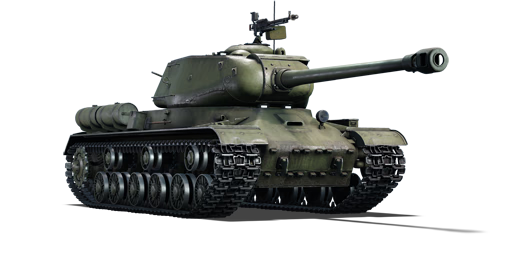
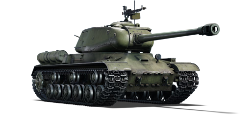

O IS-2 modelo 1944 é a segunda variante de geração tardia da família de tanques pesados IS. Ele possui uma placa de blindagem frontal superior do casco inclinada de forma uniforme, com 100 mm de espessura a um ângulo de 60°. A confiabilidade também foi aprimorada ao longo do tempo: os primeiros IS-2s tinham garantia de apenas 1.000 km antes de apresentarem falhas; porém, no final de 1944, o comandante da 1ª Frente Bielorrussa declarou que “os tanques pesados funcionaram bem e superaram o período de garantia de 1,5 a 2 vezes, tanto em horas de uso quanto em quilômetros”.
Como defesa leve contra aeronaves inimigas, uma metralhadora pesada DShK de 12,7 mm foi instalada no teto da torre, próxima à cúpula do comandante. Algumas fontes afirmam que 1.150 unidades foram construídas antes de maio de 1945, quando o IS-2 foi descontinuado em favor do muito superior IS-3.